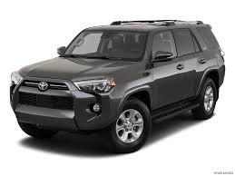

Toyota 4Runner
The Essence of the 4runner
The Toyota 4Runner has been in production since 1983 and marketed in Japan under the Hilux Surf badge but is known in the States as the 4Runner. These first-generation SUVs were shipped to the U.S. without rear seats, so they could be classified as light trucks, which lowered the customs fees. 4Runner is a play on the word “forerunner” coined by Robert Nathan at the Saatchi & Saatchi advertising firm, which has always held naming contests for any of the new Toyota models. The “4” is a nod to its 4WD capabilities and the “Runner” means it can run cross-country without problems.